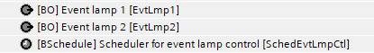
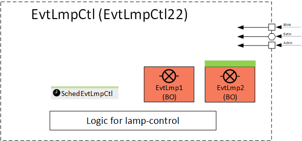
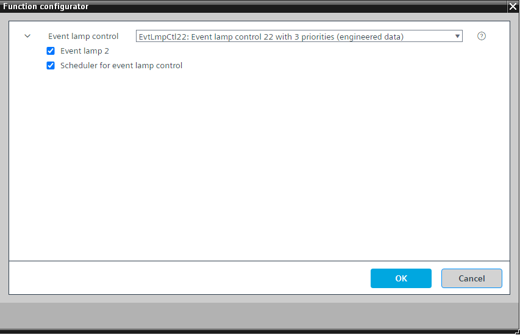

[EvtLmpCtl22] Event lamp control 22 with 3 priorities
Program block, name / node subtype: [EvtLmpCtl22] Event lamp control 22 with 3 priorities
Library hierarchy: Universal equipment
Family: EvtLmpCtl
Project tree | Diagram |
|---|---|
|
 |  |
Configurator


Program blocks are stored in the library without I/Os. Use the auto-create and auto-connect functions to create I/Os and/or to connect them to the interface blocks, e.g., R_A, CMD_B. Alternatively, take the I/Os from the folder containing the predefined I/Os in the library and/or from the plant and connect them to the interface blocks.
Function
Controls one or two alarm lamps. The behavior of the lamps (blinking, steady, or off) provides signalization of the aggregated alarms and faults and their states.
Receives information about the aggregated alarms, faults, manual interventions and their states in the form of a double integer value signal from CMN_STA, interprets it, and controls one or two alarm lamps.
Parameters
The following parameters are available:
- Parameter Blinking at new event: No, Yes
The default setting is "Yes", but if the output for a lamp is used as a hardware interface to a third-party notification system, then it should be set to "No". - Parameter Blinking at new simple event: No, Yes
A simple event is an event from a notification class (3, 6, 9, 12, 15) that does not require acknowledgement and reset. - Parameters for each priority and fault that define only whether the events are indicated with a lamp and, if so, with which lamp.
Optional functions
This program block has the following optional functions:
Option: Event lamp 2 (1xBO)
Controls a second lamp. If this option is deleted, all events are automatically sent to event lamp 1.
Option: Scheduler for event lamp control
A time scheduler that can initiate a night mode and then only high-priority events are sent to the lamp.
Option: Scheduler for event lamp control
A time scheduler that can initiate a night mode and then only high-priority events are sent to the lamp.
Mandatory elements
Name | Description | Type | Alarm / Notification class | Trend / Type | |
|---|---|---|---|---|---|
|
EvtLmp1 | Event lamp 1 | BO: Binary output | No | No | |
Optional elements
Name | Description | Type | Alarm / Notification class | Trend / Type | |
|---|---|---|---|---|---|
|
EvtLmp2 | Event lamp 2 | BO: Binary output | No | No | |
SchedEvtlLmpCtl | Scheduler for event lamp control | BSchedule: Binary scheduler | No | No | |
Parameters
The following parameters are available:
- Parameter Blinking at new event: No/Yes
- Parameter Blinking at new simple event: No/Yes
A simple event is an event from a notification class (3, 6, 9, 12, 15) that does not require acknowledgment and reset. - Parameters for each priority and fault that define only whether the events are indicated with a lamp and, if so, with which lamp.
Event lamp 2 is optional. If you delete this option, all events are automatically sent to lamp 1.
The optional scheduler can set up a night mode and then only high priority events are sent to the lamp.